Estrategia primero
Las primeras páginas responden a quién le hablamos y para qué, antes de mostrar un solo color.
El manual que escribí y diseñé para la evolución de Magneto a Magneto 365 AI: quiénes somos, a quién le hablamos y cómo se ve la marca en cada pieza B2B. Veintidós páginas para que cualquier persona del equipo pueda diseñar sin romper la marca.
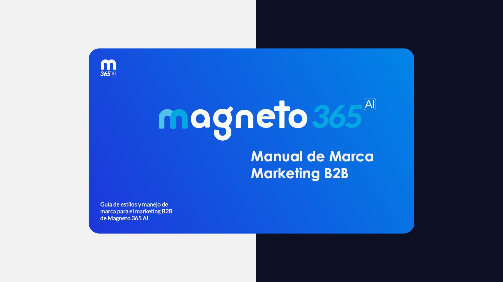
El manual empieza por la estrategia antes que por la forma: misión, visión, customer journey e intención comunicativa. Solo después llegan el logo, el color y la tipografía. Así cada decisión visual tiene una razón que el equipo comercial puede explicar.
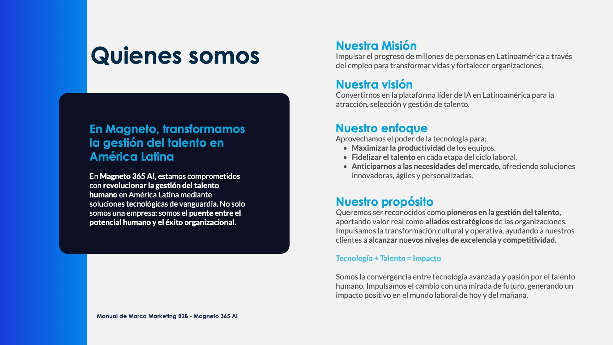
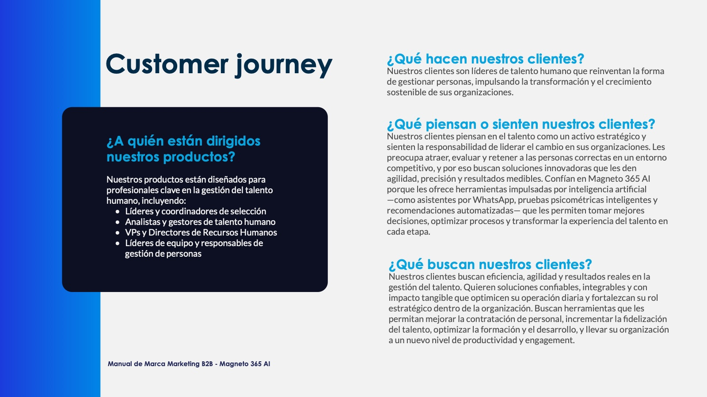
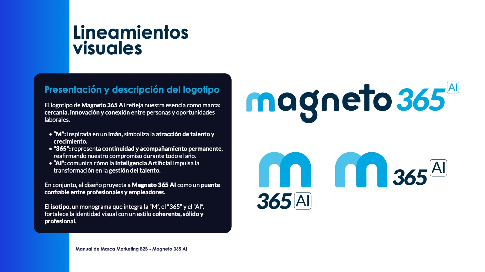
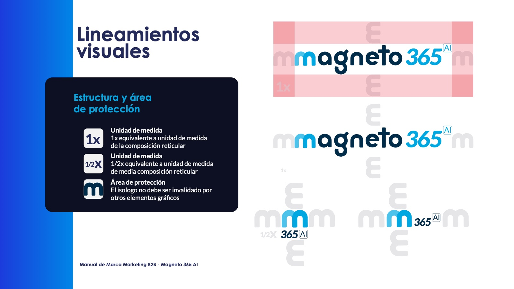
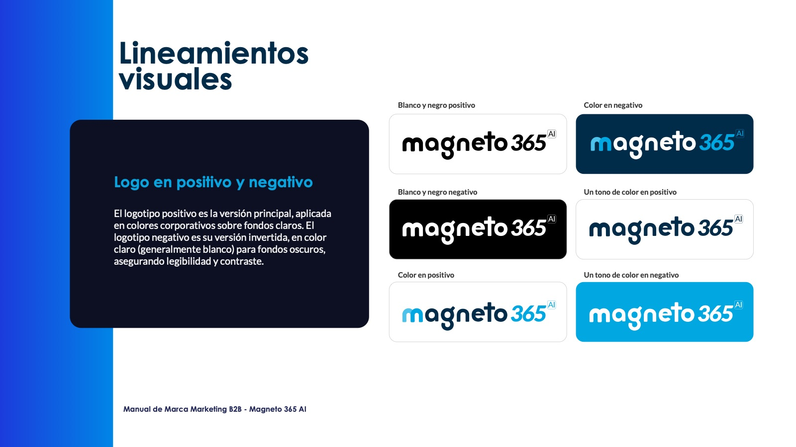
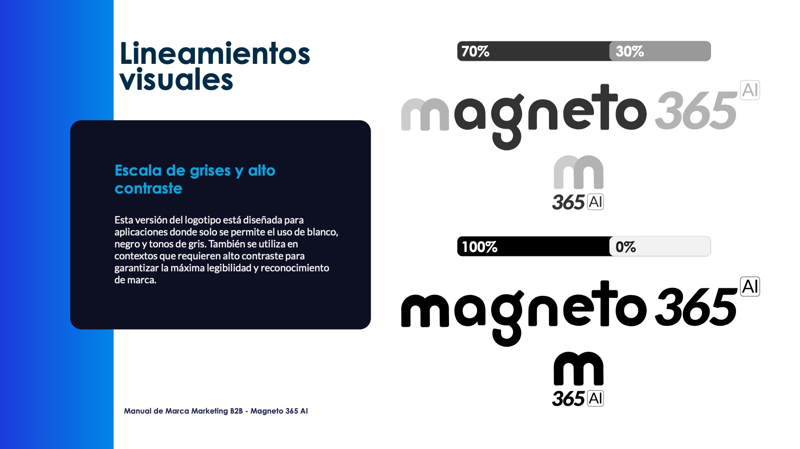
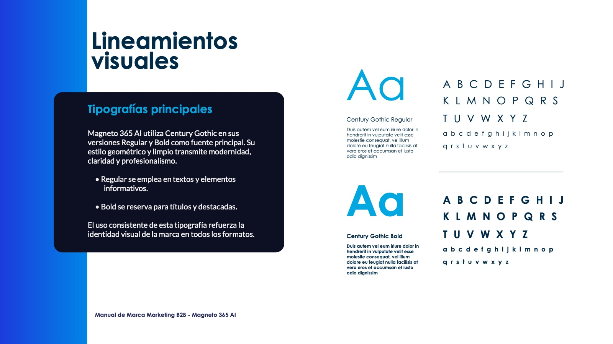
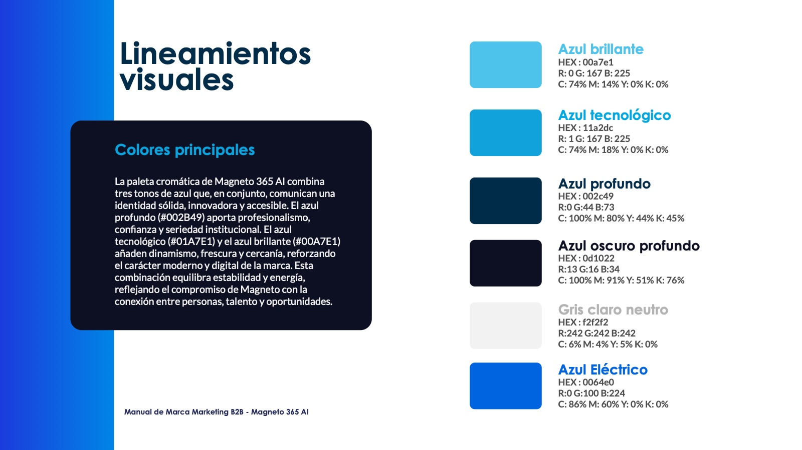
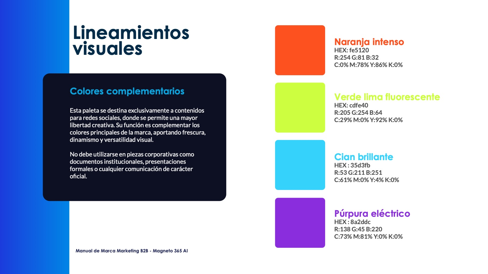
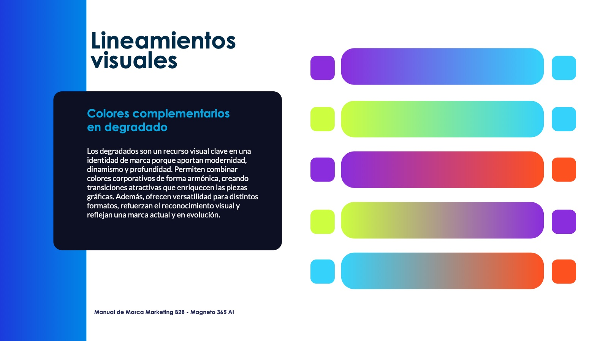
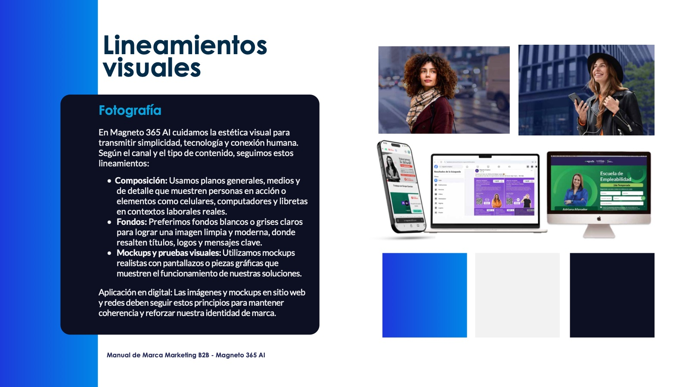
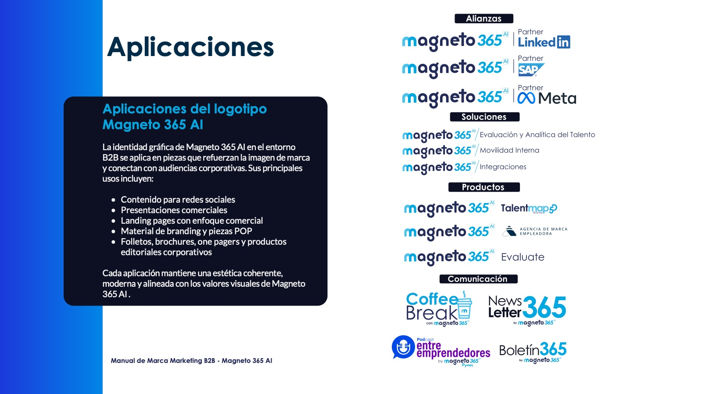
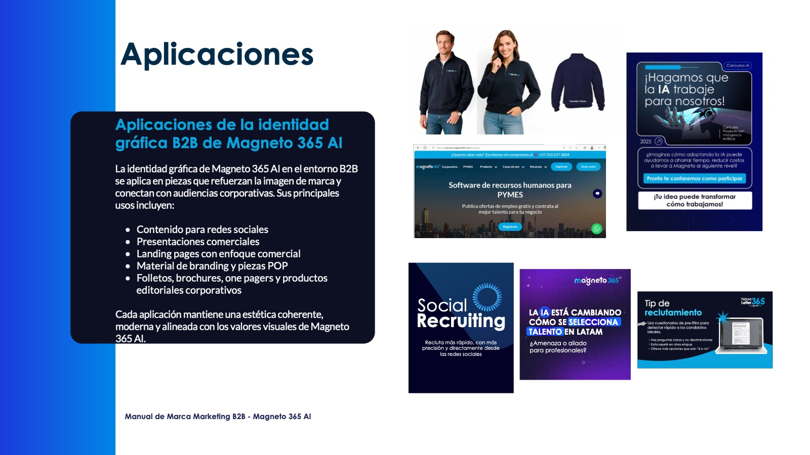
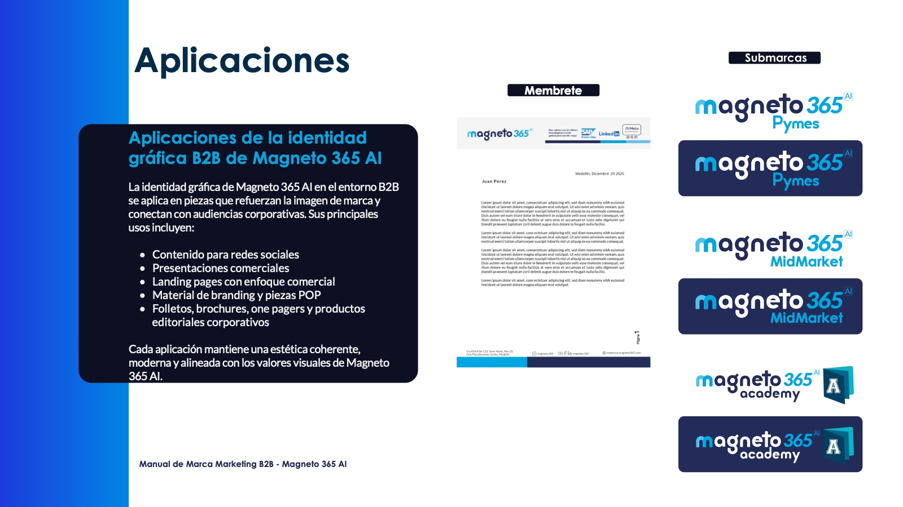
Las primeras páginas responden a quién le hablamos y para qué, antes de mostrar un solo color.
Academy, Coffee Break, newsletter y alianzas comparten la misma raíz y se distinguen por su descriptor.
Cada lineamiento explica el porqué, para que ventas y marketing lo apliquen sin pedir permiso.